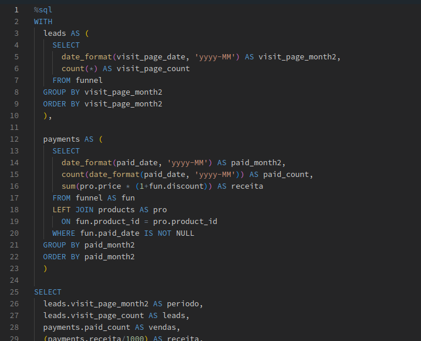
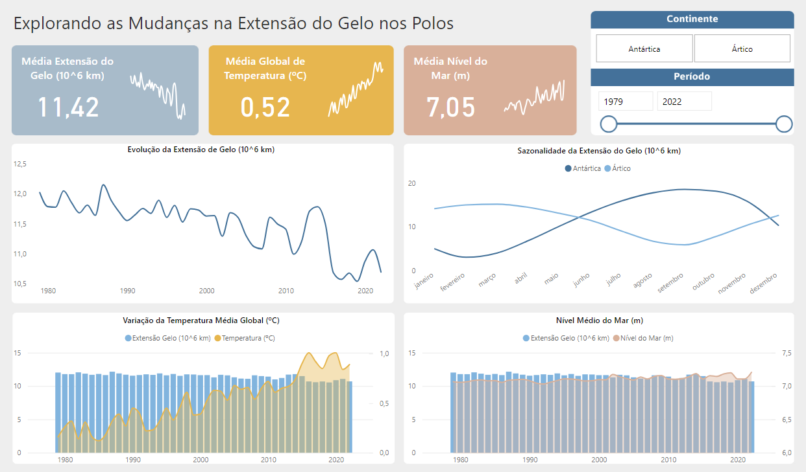

Bem-vindo(a) ao meu portfólio!
Sou uma entusiasta apaixonada por transformar dados complexos em insights acionáveis.
Venho trabalhando em projetos desafiadores que abrangem desde a otimização de processos até a criação de soluções inteligentes para tomada de decisões estratégicas. Minha formação em Análise e Deenvolvimento de Sistemas e minha dedicação contínua em me aprimorar em ferramentas e linguagens que me permitem explorar novas possibilidades e oferecer soluções inovadoras.
Convido você a explorar este portfólio, onde compartilho meu trabalho, conquistas e a forma como busco impactar positivamente os negócios por meio da análise de dados. Sinta-se à vontade para entrar em contato caso deseje saber mais sobre algum projeto específico ou sobre como podemos colaborar em futuras iniciativas.
Tecnologias
Linguagens
Banco de Dados
Data Visualization
Cloud
Tools
Experiências Profissionais
Contribuição em projetos estratégicos focados em
pesquisas internas, com ênfase na otimização do
processos e desenvolvimento de uma ferramenta
web de pesquisa personalizada.
Utilizando habilidades em análise de dados,
juntamente com técnicas de programação, para
impulsionar insights acionáveis e facilitar a coleta e
análise de dados qualitativos e quantitativos para a
tomada de decisão.
Experiência no setor de Recursos Humanos em diversas áreas, tais como suporte na implantação e manutenção de sistemas, planejamento orçamentário anual, pagamentos e controle de frequência de estagiários,
aprimoramento de processos internos, gestão de dados, controle de vagas de estágio, gerenciamento de estoque e patrimônio, acompanhamento de contratos,
elaboração de comunicação interna e ofícios, atendimento aos clientes.
Projetos

O objetivo do projeto é explorar um conjunto de dados de vendas de carros para extrair insights e identificar tendências.
Ferramentas utilizadas:
- Databricks
- PySpark
- SQL
- Parquet
Saiba mais

O objetivo do projeto Sea Ice Index é analisar as variações do gelo polar, revelando padrões sazonais, impactos das mudanças climáticas e correlações com o nível do mar.
Ferramentas utilizadas:
- Power BI
- Power Query
- Figma
Saiba mais